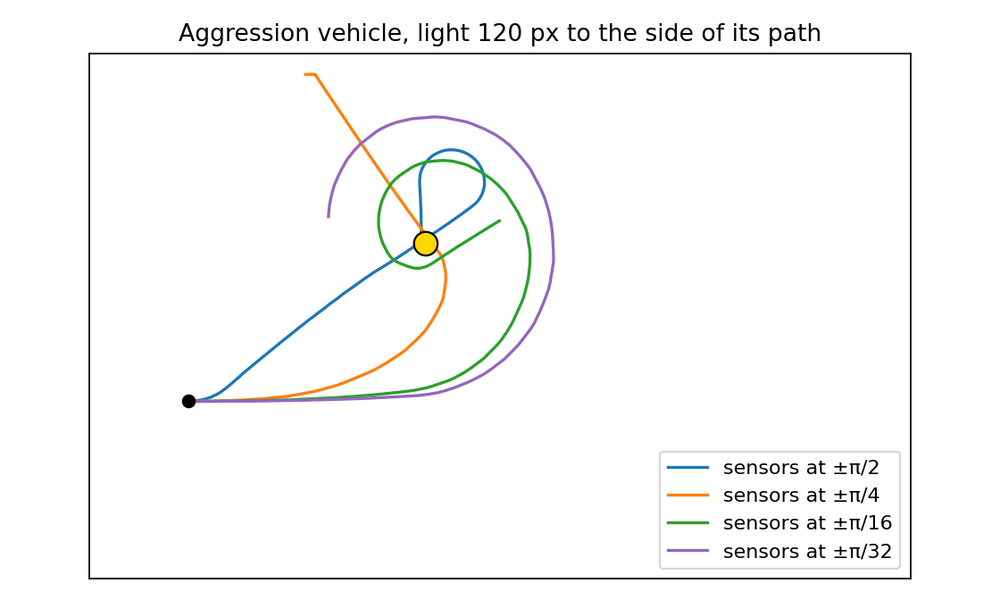
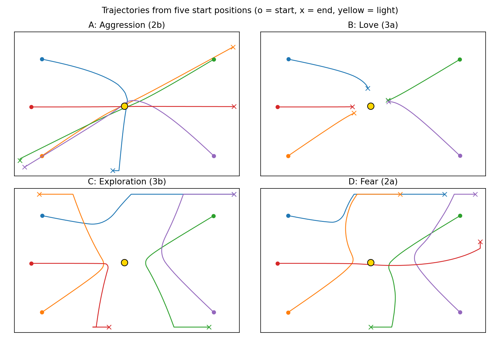

loadVehicle()In BraitenbergABCD.html the drop-down is a <select id="vehicleSelectBox"> with the options A, B, C and D. The select element itself has no event handler, so choosing an option does nothing yet. Next to it is a Load button with onclick="javascript:loadVehicle();", which calls the function without any argument.
The choice is therefore not passed as a parameter. Instead, loadVehicle() reads it from the page (the DOM) when it runs:
switch(document.getElementById("vehicleSelectBox").selectedIndex) { ... }
selectedIndex is the zero-based position of the selected option, so A = 0, B = 1, C = 2 and D = 3. The switch statement uses this number to pick the configuration. In the original file only case 0 existed; every other index fell through to the default branch, which opens a prompt where the vehicle's JSON description can be edited by hand. We kept that branch as a fallback.
The new settings are written into simulationInfo.bayVehicle, which is the vehicle currently shown in the "bay" at the bottom left. This is the last vehicle that was clicked or dragged (vehicle 1 by default). After the switch, loadBay() redraws the bay and updates the sensor controls. So when there are several vehicles in the arena, you first click the one you want to change and then press Load.
A sensor's position is an angle measured from the front of the vehicle. Because the y-axis of the HTML canvas points downwards, a negative angle lies on the vehicle's left side and a positive angle on its right side. The sensors sit on the rim of the body (radius 15 px), so the sideways distance between two sensors at ±θ is 2 · 15 · sin θ. This is about 21 px at ±π/4 but only 5.9 px at ±π/16.
The sensors are not directional. Each one simply measures the light intensity at its own position, and that intensity falls off with distance to the bulb (roughly as 1/distance in the simulator). The only reason the left and right sensor read different values is that one of them is a bit closer to the light. The vehicle's own body also casts a small shadow.
Prediction. If the sensors are moved closer together (±π/16), both sensors are at almost the same distance from the light. The difference between the two motor signals, which is what makes the vehicle turn, becomes much smaller. We expected the vehicle to keep the same type of behaviour (the wiring does not change) but to steer much more weakly. It would drive in straighter lines and react later, and it could miss a light that is off to the side.
Observations. We tested this with the default (aggression) vehicle, both by dragging the sensors in the bay and by recording trajectories. In the controlled test the vehicle starts driving straight ahead with the light 120 px to the side of its path (Figure 1, Table 1).
| Sensor positions | Sideways separation | Heading change in first 15 steps | Steps until the light is reached |
|---|---|---|---|
| ±π/2 | 30 px | 30° | 114 |
| ±π/4 (default) | 21 px | 5° | 81 |
| ±π/8 | 11 px | 2° | 115 |
| ±π/16 | 5.9 px | 1° | 195 (misses the first time, circles back) |
| ±π/32 | 2.9 px | 0° | not reached within 260 steps (circles around it) |

This matched our prediction. With the sensors at ±π/16 the vehicle hardly turned at first, drove past the light, and only reached it after a wide loop. At ±π/32 it kept circling around the light without hitting it. Placing the sensors far apart (±π/2) gave the strongest steering; the vehicle turned sharply towards the light right away. It was not faster than the default placement, though, because the hard turns cost forward progress, and after passing the light it looped back to it again. Two more things we noticed while dragging sensors:
The default vehicle has its left sensor (−π/4) connected to the right motor and its right sensor (+π/4) to the left motor, with a positive (excitatory) strength of 1. When the light is on its left, the right wheel turns faster, so the vehicle turns left, towards the light, and speeds up as it gets closer. This is Braitenberg's vehicle 2b, aggression (the code comment also labels it this way). It drives straight into the light at full speed.
In the code, a sensor's type is the motor it drives ("left" or "right"), not the side it is on. The sign of strength sets whether the connection is excitatory (+) or inhibitory (−), and baseValues gives the motor speeds when there is no light. We added cases 1–3 to loadVehicle() in the same style as case 0. We also gave each type its own colour so they can be told apart with several vehicles in the arena.
| Option | Vehicle | Wiring | Connection | Base speed | Strength | Colour |
|---|---|---|---|---|---|---|
| A | Aggression (2b) | crossed | excitatory | 1 | +1 | red |
| B | Love (3a) | uncrossed | inhibitory | 3 | −0.5 | magenta |
| C | Exploration (3b) | crossed | inhibitory | 3 | −0.5 | green |
| D | Fear (2a) | uncrossed | excitatory | 1 | +1 | blue |
loadVehicle(). All sensors sit at ±π/4. "Crossed" means the left sensor drives the right motor and vice versa.For example, the love vehicle is implemented as:
case 1: //Love (3a): uncrossed, inhibitory
simulationInfo.bayVehicle.vehicle.color = "magenta";
simulationInfo.bayVehicle.vehicle.baseValues = {left: 3, right: 3, bulb: 0};
simulationInfo.bayVehicle.vehicle.sensors = [
{position: -Math.PI/4, type: "left", strength: -0.5},
{position: Math.PI/4, type: "right", strength: -0.5}];
break;
Fear only needed the wires uncrossed. For love and exploration our first attempt was to copy the default values and flip the sign (base speed 1, strength −1). That did not work: the vehicle immediately drove backwards, away from the light. Reading moveVehicle() explained why. Each sensor adds strength × light × bulbPower to its motor, and bulbPower (5) is applied twice (also in getSensorResponse()), so the effective gain is 25. Near a single bulb the light value is about 10/d (d = distance in pixels, capped at 1). At 200 px this already gives an inhibition of 1.25, which is more than the base speed of 1, so the motor speeds became negative.
An inhibitory vehicle can only slow down, so it needs a base speed that is larger than the inhibition it gets far from the light. The love vehicle comes to rest where the inhibition equals the base speed, i.e. at a sensor distance of d = 250 · |strength| / base. With base 3 and strength −0.5 this predicts 42 px from sensor to bulb. The sensors are about 11 px in front of the vehicle's centre, which gives roughly 53 px centre to centre, close to the 50 px we measured. We also tried other settings (base 1 or 2 with strength −0.5 stopped at 134 px and 71 px), and those matched the formula too. We chose base 3 / −0.5 because the vehicle then stops close to the light but does not touch it, and moves at a speed comparable to the other vehicles. We used the same values for exploration.

Things that tripped us up.
type names the motor a sensor is connected to, not where the sensor is. Once we understood that, crossed versus uncrossed wiring was just a matter of swapping "left" and "right".moveVehicle() to choose sensible base speeds.moveVehicle() code in Node.js and recorded the vehicle positions. The figures and numbers in this write-up come from those recordings.What we found interesting. It is striking how different the behaviours look even though the vehicles differ only in two things: whether the wires cross and the sign of the connection. Without knowing the wiring, it is tempting to describe the vehicles as "angry", "shy" or "in love", while they are just two sensors and two motors. The sensor experiment showed the same idea from another angle: moving the sensors across the midline turns aggression into fear without touching any code. The fear vehicle driving head-on into the light was also a nice example of how a purely reactive system can end up in a situation where its behaviour looks like the opposite of its "character".
What we found difficult. The motion code in moveVehicle() (turning along a circle defined by the two wheel speeds) and the lighting code were hard to read at first, and we needed them to understand why our first love and exploration vehicles drove backwards. Once we derived the stopping-distance formula and saw it match the measurements, tuning the parameters became easy.